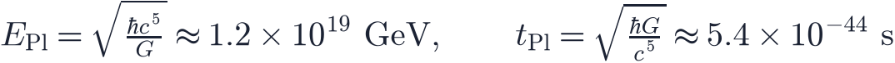

In this lesson you will learn
|
Knowing what we do not know
This course has covered a remarkably successful theory. Yet 95% of the universe is in forms we cannot identify, the first instant of time is beyond our physics, and some of the biggest questions may not even be answerable. This final lesson surveys the frontier.
Established, likely, speculative A useful habit is to label claims:
|

1. What is dark matter?
We know dark matter's gravitational effects (lesson L3.2) and that it is cold, collisionless and not made of baryons. Its particle identity is unknown. Main candidates:
- WIMPs (weakly interacting massive particles), with masses of roughly 10–1000 times the proton mass, naturally produced in the right amount in the early universe. Underground experiments such as XENONnT, LZ and PandaX have not detected them and now exclude much of the simplest parameter space.
- Axions, extremely light particles originally proposed to solve a puzzle in the strong nuclear force. Experiments such as ADMX search for them converting into microwave photons in strong magnetic fields.
- Sterile neutrinos, heavier cousins of ordinary neutrinos that could form warm dark matter.
- Primordial black holes, formed in the very early universe. Microlensing and other constraints rule them out as all of dark matter over most mass ranges, but some windows remain.
Searches follow three routes: direct detection (dark matter hitting a detector), indirect detection (gamma rays or neutrinos from dark matter annihilating) and production at colliders such as the LHC. Astrophysics adds a fourth: small-scale structure, such as the number of dwarf galaxies and lensing substructure, constrains how "cold" dark matter is (lesson L5.5). Lesson L3.6 describes each of these searches.
2. What is dark energy?
The simplest explanation, a cosmological constant, faces the cosmological constant problem (lesson L3.3): quantum field theory naively predicts a vacuum energy up to times larger than observed. A related coincidence problem asks why dark energy and matter have comparable densities just now, when observers exist.
Possible directions include evolving dark energy (lesson L6.7), modified gravity, or anthropic arguments within a multiverse (see below). Measuring precisely, and testing whether gravity behaves as general relativity predicts on cosmic scales, are the main observational goals of DESI, Euclid, the Rubin Observatory and the Roman Space Telescope.
Try it: Build Your Own Universe Try to build a universe without dark matter or without dark energy that still passes the report card. Which observations stop you? |
3. The beginning and quantum gravity
Running the Friedmann equations backwards, density and temperature grow without limit as
 : the Big Bang singularity. A singularity means the theory has broken down, not
that infinite density really existed.
: the Big Bang singularity. A singularity means the theory has broken down, not
that infinite density really existed.
At the Planck scale,

quantum effects of gravity become important. General relativity and quantum mechanics are both spectacularly successful but mutually incompatible here. We need a theory of quantum gravity.
- String theory replaces particles by tiny vibrating strings and naturally includes gravity, but requires extra dimensions and has not made testable cosmological predictions yet.
- Loop quantum gravity quantises spacetime itself; in loop quantum cosmology the Big Bang may be replaced by a Big Bounce from a previous contracting phase.
- Other approaches include asymptotic safety, causal dynamical triangulations and emergent gravity.
Whether time had a beginning, whether there was a "before", and how the initial conditions for inflation were set remain open questions. Primordial gravitational waves and non-Gaussian features in the CMB could provide the first clues.
4. The multiverse
The multiverse is the idea that our observable universe is one of many regions or universes. Several versions appear in the literature:
- Beyond our horizon: if space is infinite, there are infinitely many regions like our observable universe. This follows from simple assumptions but can never be observed directly.
- Eternal inflation: inflation may never end everywhere at once, continually producing new "bubble" universes, possibly with different properties.
- The string landscape: string theory may allow a vast number of possible vacuum states with different constants of nature; we would live in one where a small cosmological constant permits galaxies and life.
- Many worlds in the interpretation of quantum mechanics, a different concept not tied to cosmology.
Science or philosophy? Critics argue that ideas which cannot be tested even in principle are not science. Supporters reply that the multiverse follows from theories that are tested in other ways, and that signatures such as bubble collisions in the CMB could, in principle, be found. None has been detected. It is important to present the multiverse as speculation, not as an established result. |
5. Smaller puzzles that may point somewhere big
- Tensions in
 and
and  (lesson L6.6).
(lesson L6.6). - The lithium problem in nucleosynthesis (lesson L4.3).
- The origin of the matter–antimatter asymmetry (lesson L4.6).
- Neutrino masses, which cosmology may measure before laboratories do (lesson L4.5).
- Large-angle CMB anomalies, such as a low quadrupole and a "cold spot", probably statistical flukes.
- Surprisingly early massive galaxies found by JWST, which test how fast galaxies can form.
The next decades
- Galaxy surveys: DESI, Euclid, the Vera C. Rubin Observatory and the Nancy Grace Roman Space Telescope will map billions of galaxies.
- CMB: the Simons Observatory, CMB-S4-like projects and LiteBIRD will search for primordial gravitational waves.
- Radio: the Square Kilometre Array will map neutral hydrogen through cosmic dawn.
- Gravitational waves: LISA, the Einstein Telescope and Cosmic Explorer will hear black holes across the universe and measure the expansion with sirens.
- Laboratories: dark matter detectors, neutrino experiments and colliders test the particle side of cosmology.
The biggest lesson Cosmology went from philosophy to precision science in one century. Every answer so far has raised new, deeper questions. You now have the tools to follow the next discoveries as they happen. |
Remember this
|